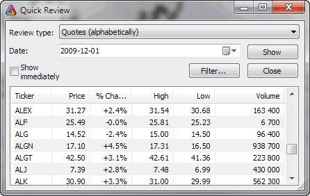

This window provides overall market information like:
In the Date field, you select the base date for comparisons. For example, weekly returns are calculated by dividing the base day's close price by the closing price one week before.
Filter button allows you to narrow down your search to symbols defined in Filter settings window.